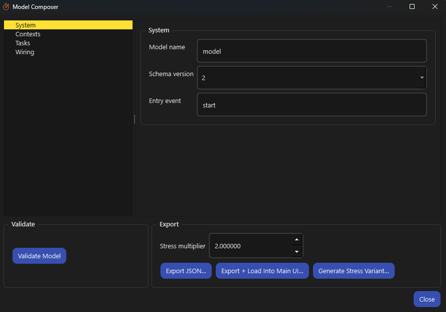
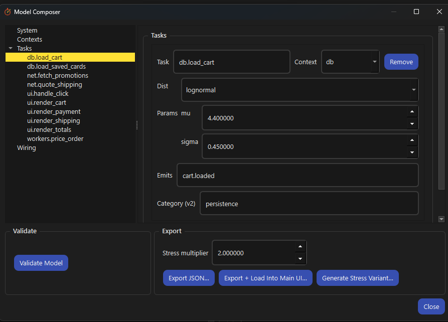

LatencyLab
Simulate your architecture's latency before you build it. Describe the design as a small explicit model, run it thousands of simulated times and see which chain of work users would actually wait on. It is not a profiler, tracer or runtime observer: it works on the design rather than the code, so it applies to any event-driven software. It exists to prevent confident people from shipping bad architecture.
Windows, macOS and Linux. Builds are published on the releases page as they ship.
A design-time latency simulator
You describe a planned or existing architecture as a small, explicit model: the units of work, the events that trigger them and the shared resources they queue behind. LatencyLab executes that model thousands of times with realistic timing variation and out come the numbers a whiteboard cannot give you: how long the flow takes across percentiles, which chain of work actually held each run up and how often each chain is the culprit. The whole workflow is a loop:
Model
Write the architecture down small enough to argue about: tasks, the events that trigger them and the resources they queue behind. Plain JSON, written by hand or built in the composer with no JSON at all. A useful model is often 10 to 20 tasks.
Run
The entry event fires, tasks run on their contexts, queues form where concurrency is exhausted and durations are drawn from the distributions you chose. Hundreds or thousands of times, every run seeded and reproducible.
Read
Every run records the makespan (how long the user waited) and the critical path (the chain of tasks and waits that set the finish time). One run tells you nothing; the spread across runs is the finding.
Change one thing
Raise a context's concurrency, remove a debounce, split a queue. One change at a time, because two changes and a different answer tells you nothing about which one did it.
Compare
Run again on the same seed. The randomness is identical, so a shift in the percentiles or the dominant path is the cost or benefit of the design change, isolated from luck.
What a model is
- System. A name and the entry event that kicks off a run, such as "user clicks Pay".
- Contexts. The things work runs on: a thread pool, a database connection, a browser main thread. Each has one property, concurrency: how many things it can genuinely do at once. Concurrency 1 means everything sent to it waits in line, which is exactly what a single database connection or a UI thread is. This is where queueing (and therefore most surprising latency) comes from.
- Tasks. The units of work: which context each runs on, how long it takes (as a distribution, because real durations vary) and which event it emits when it finishes.
- Wiring. Which events trigger which tasks, optionally after a delay: debounces, retry backoffs, poll intervals. The wiring is the architecture.
You are not modelling your code. You are modelling the shape of the design: what happens, what waits for what and what competes for what.
Any event-driven software
- Because it simulates the design rather than the code, the domain does not matter.
- The same tool models a web checkout calling four backends, a desktop app's UI thread, a fan-out of microservice calls, a mobile flow behind a debounce or an embedded event pipeline.
- It is for anyone making structural decisions about such software: senior engineers, architects, tech leads, at the point where those decisions are still cheap to change.
- If it can be described as work triggered by events, competing for shared resources, it can be modelled.
Change the model, run again on the same seed and you can see exactly what an architectural decision costs before a line of it is written.
For the people who own structural decisions
LatencyLab is aimed at the roles that make structural decisions which are expensive to undo. It is domain-agnostic: because it simulates the design rather than instrumenting code, the same tool models a web backend, a desktop or mobile UI, a microservice fan-out or an embedded pipeline. If you have ever said "we will profile it later", this is what later should have looked like.
It is for you if
- You are a senior engineer, architect or CTO validating an architecture before it hardens.
- You want to see where perceived latency actually comes from, not where you assume it does.
- You need to know which causal paths dominate latency most often and how contention shapes responsiveness.
- You want to test which architectural changes help before any code is written.
It is not for you if
- You want to tune code that already exists. Use a profiler.
- You want a dashboard that reassures you everything is fine.
- You want generated recommendations. It does not tell you how to make a function faster.
- You want to reason about latency without committing to explicit structure. This will feel uncomfortable; that is intentional.
Find the latency problem before it is politically expensive
Profilers explain what happened in a running system. They rarely explain why the user waited. LatencyLab executes explicit models of tasks, events, queues, delays and resource contention using deterministic scheduling and reproducible randomness, then runs them many times to produce concrete metrics.
Explicit models
A model is your architecture written down: tasks, the events that trigger them and the resources they queue behind. Nothing is inferred and nothing is hidden. The model is what you reason about.
Many seeded runs
One run tells you nothing; the spread across hundreds is the finding. Every run is seeded, so behaviour stays reproducible across versions. At scale the dominant behaviours become clearer, not noisier.
Critical paths and percentiles
The critical path is the chain of tasks and waits that decided how long the user waited in one run. Concrete critical paths name the work; percentiles are split for UI events and overall makespan because they answer different questions.
Yours, on your machine
The model is a plain JSON file and every output is a plain file beside it. A local CLI plus an optional desktop UI. No account, no server, no instrumentation of production code. Nothing leaves your machine.
What the application tells you, in short
The desktop UI carries its own Guide and its own information panel. Both are reproduced here, cut down to the parts worth reading before you have installed anything.
Using it
- Your first run in six steps, using the shipped Checkout example.
- What the makespan distribution, the critical path and the path frequencies each mean.
- How to change one thing and run it again, then how to write a model from nothing.
- Why you would pick each runs, seed, concurrency and distribution setting.
Reading the output
- Why one run is not evidence and percentiles describe exposure rather than goals.
- Why a critical path is not what was slow.
- Why a dominant path is structure, not a bug.
- When the long tail can be left alone.
It shows what the model produced and nothing it did not
The UI exists because text output alone was not enough to reason about timing, ordering and consequence. It is intentionally literal: it shows what ran, how often it ran and where time accumulated. Full keyboard navigation is treated as a constraint, not polish.



Install it and run the shipped example
One installer per platform, per-user on Windows, no administrator rights and no toolchain. Open the Examples menu, choose Checkout, press Run: you have a distribution and a critical path inside a minute, before you have written a model of your own.
Underneath the desktop application is a Python library with a CLI in front of it, reading a JSON execution model. Every run writes plain files you can plot or diff, whichever way you drove it.
summary.jsonAggregate latency and contention statistics for the whole run.
runs.csvPer-run metrics, suitable for analysis or plotting.
trace.csvOptional per-task-instance timing and causality data.